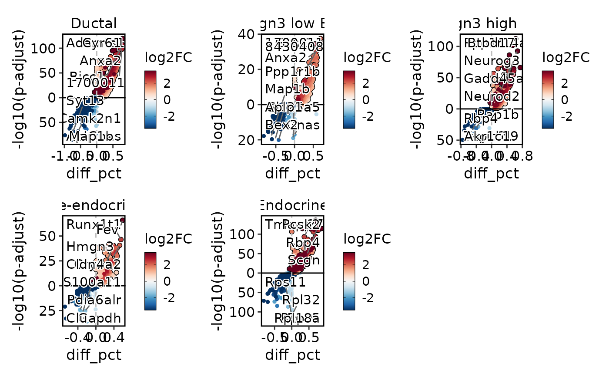
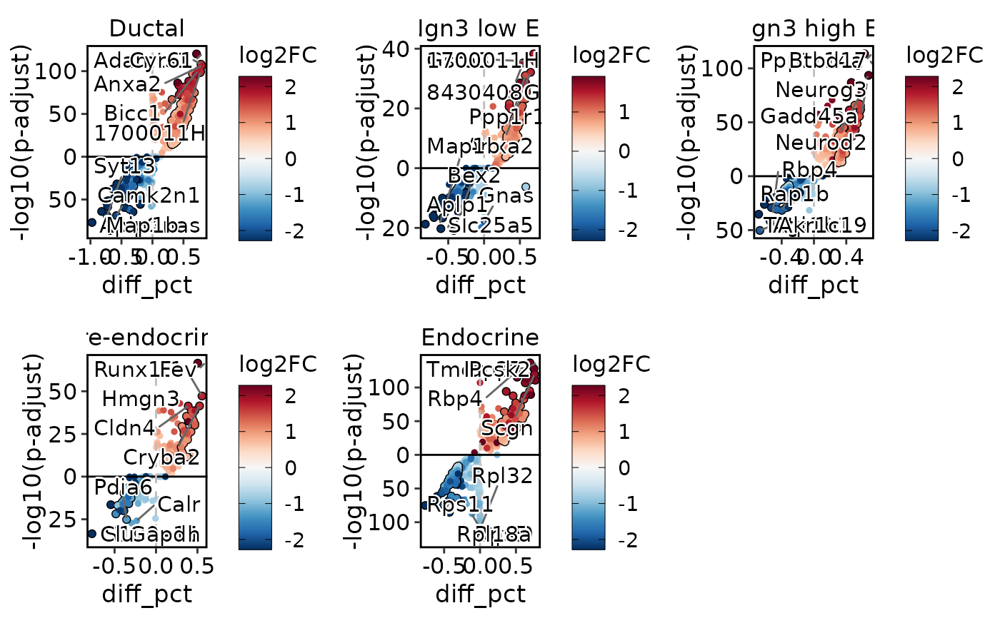
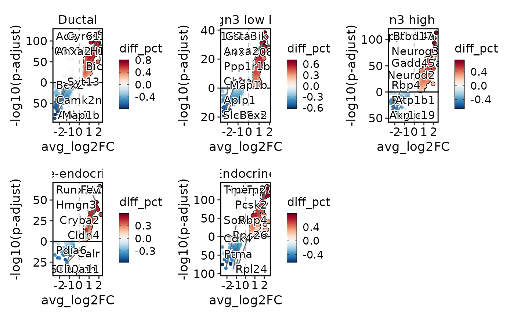

Generate a volcano plot based on differential expression analysis results.
Usage
VolcanoPlot(
srt,
group_by = NULL,
test.use = "wilcox",
DE_threshold = "avg_log2FC > 0 & p_val_adj < 0.05",
x_metric = "diff_pct",
palette = "RdBu",
palcolor = NULL,
pt.size = 1,
pt.alpha = 1,
cols.highlight = "black",
sizes.highlight = 1,
alpha.highlight = 1,
stroke.highlight = 0.5,
nlabel = 5,
features_label = NULL,
label.fg = "black",
label.bg = "white",
label.bg.r = 0.1,
label.size = 4,
aspect.ratio = NULL,
xlab = x_metric,
ylab = "-log10(p-adjust)",
theme_use = "theme_scp",
theme_args = list(),
combine = TRUE,
nrow = NULL,
ncol = NULL,
byrow = TRUE
)Arguments
- srt
An object of class `SummarizedExperiment` containing the results of differential expression analysis.
- group_by
A character vector specifying the column in `srt` to group the samples by. Default is `NULL`.
- test.use
A character string specifying the type of statistical test to use. Default is "wilcox".
- DE_threshold
A character string specifying the threshold for differential expression. Default is "avg_log2FC > 0 & p_val_adj < 0.05".
- x_metric
A character string specifying the metric to use for the x-axis. Default is "diff_pct".
- palette
A character string specifying the color palette to use for the plot. Default is "RdBu".
- palcolor
A character string specifying the color for the palette. Default is `NULL`.
- pt.size
A numeric value specifying the size of the points. Default is 1.
- pt.alpha
A numeric value specifying the transparency of the points. Default is 1.
- cols.highlight
A character string specifying the color for highlighted points. Default is "black".
- sizes.highlight
A numeric value specifying the size of the highlighted points. Default is 1.
- alpha.highlight
A numeric value specifying the transparency of the highlighted points. Default is 1.
- stroke.highlight
A numeric value specifying the stroke width for the highlighted points. Default is 0.5.
- nlabel
An integer value specifying the number of labeled points per group. Default is 5.
- features_label
A character vector specifying the feature labels to plot. Default is `NULL`.
- label.fg
A character string specifying the color for the labels' foreground. Default is "black".
- label.bg
A character string specifying the color for the labels' background. Default is "white".
- label.bg.r
A numeric value specifying the radius of the rounding of the labels' background. Default is 0.1.
- label.size
A numeric value specifying the size of the labels. Default is 4.
- aspect.ratio
A numeric value specifying the aspect ratio of the plot. Default is `NULL`.
- xlab
A character string specifying the x-axis label. Default is the value of `x_metric`.
- ylab
A character string specifying the y-axis label. Default is "-log10(p-adjust)".
- theme_use
A character string specifying the theme to use for the plot. Default is "theme_scp".
- theme_args
A list of theme arguments to pass to the `theme_use` function. Default is an empty list.
- combine
A logical value indicating whether to combine the plots for each group into a single plot. Default is `TRUE`.
- nrow
An integer value specifying the number of rows in the combined plot. Default is `NULL`.
- ncol
An integer value specifying the number of columns in the combined plot. Default is `NULL`.
- byrow
A logical value indicating whether to arrange the plots by row in the combined plot. Default is `TRUE`.
Examples
data("pancreas_sub")
pancreas_sub <- RunDEtest(pancreas_sub, group_by = "CellType", only.pos = FALSE)
#> Warning: Data in the 'data' slot is raw counts. Perform NormalizeData(LogNormalize) on the data.
#> [2023-11-02 18:28:42.310045] Start DEtest
#> Workers: 1
#> Find all markers(wilcox) among 5 groups...
#>
|
| | 0%
|
|==============================================================================================================| 100%
#>
#> [2023-11-02 18:28:49.7704] DEtest done
#> Elapsed time:7.46 secs
VolcanoPlot(pancreas_sub, group_by = "CellType")

VolcanoPlot(pancreas_sub, group_by = "CellType", DE_threshold = "abs(diff_pct) > 0.3 & p_val_adj < 0.05")

VolcanoPlot(pancreas_sub, group_by = "CellType", x_metric = "avg_log2FC")
